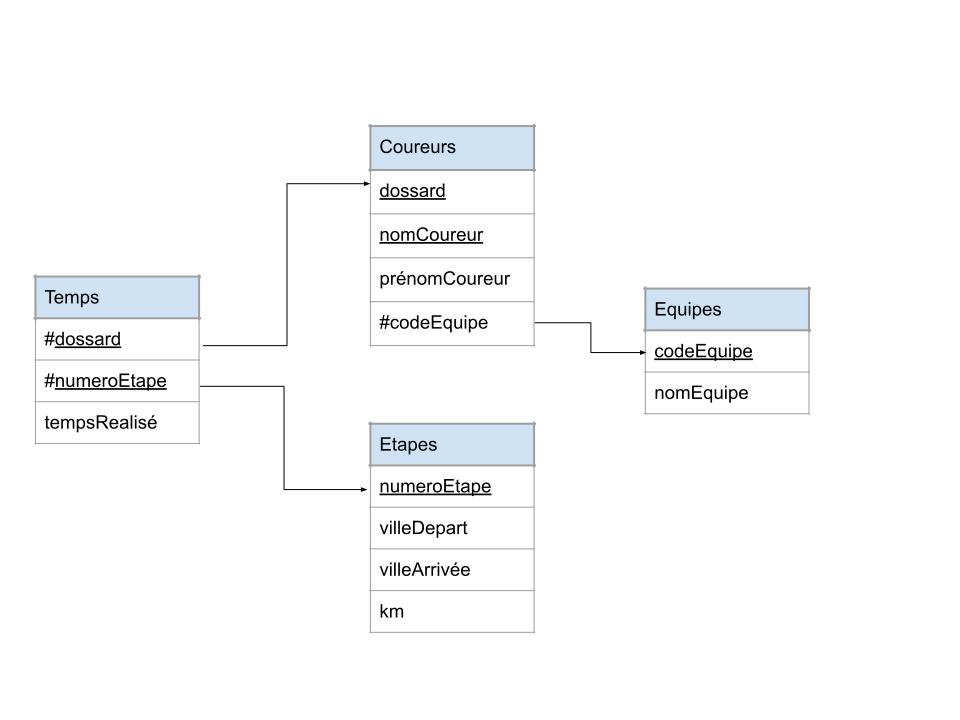

Modèle relationnel⚓︎
| Thème 2 : Base de données |
|---|
| 01 | Le modèle relationnel |
|---|
Programme Terminale
| Contenus | Capacités attendues | Commentaires |
|---|---|---|
| Modèle relationel : relation, attribut, domaine, clef primaire, clef étrangère, schéma relationnel | Identifier les concepts définissant le modèle relationnel | Ces concept permettent d'exprimer les contraites d'intégrité (domaine, relation et référence) |
L’année dernière nous avons eu l’occasion de travailler sur des données structurées en les stockant dans des fichiers au format CSV. Même si cette méthode de stockage de l’information peut s’avérer pratique dans certains cas précis, il est souvent souhaitable d’utiliser une base de données pour stocker des données.
En effet si le nombre de données à stocker devient très grand, est-ce que ma solution choisie pourra les gérer ? (on peut par exemple méditer sur le cas du Royaume-Uni dont le comptage des patients positifs au Covid est devenu faux car il a dépassé les limites de leur feuille Excel)
-
Est-ce que d'autres personnes que moi sont susceptibles de consulter ou modifier ces données, éventuellement en même temps que moi ?
-
Si une donnée se retrouve à plusieurs endroits dans mes données, devrais-je aller modifier cette donnée partout où elle se trouve ou bien une seule fois ?
L'étude des Bases de Données tente d'apporter des réponses à toutes ces questions.
Dans une base de données, l’information est stockée dans des fichiers, mais à la différence des fichiers au format CSV, il n’est pas possible de travailler sur ces données avec un simple éditeur de texte. Pour manipuler les données présentes dans une base de données (écrire, lire ou encore modifier), il est nécessaire d’utiliser un type de logiciel appelé "système de gestion de base de données" très souvent abrégé en SGBD.
Il existe une multitude de SGBD : des gratuites, des payantes, des libres ou bien encore des propriétaires. Les SGBD permettent de grandement simplifier la gestion des bases de données :
- les SGBD permettent de gérer la lecture, l’écriture ou la modification des informations contenues dans une base de données
- les SGBD permettent de gérer les autorisations d’accès à une base de données. Il est en effet souvent nécessaire de contrôler les accès par exemple en permettant à l’utilisateur A de lire et d’écrire dans la base de données alors que l’utilisateur B aura uniquement la possibilité de lire les informations contenues dans cette même base de données.
- les fichiers des bases de données sont stockés sur des disques durs dans des ordinateurs, ces ordinateurs peuvent subir des pannes. Il est souvent nécessaire que l’accès aux informations contenues dans une base de données soit maintenu, même en cas de panne matérielle. Les bases de données sont donc dupliquées sur plusieurs ordinateurs afin qu’en cas de panne d’un ordinateur A, un ordinateur B contenant une copie de la base de données présente dans A, puisse prendre le relais. Tout cela est très complexe à gérer, en effet toute modification de la base de données présente sur l’ordinateur A doit entraîner la même modification de la base de données présente sur l’ordinateur B. Cette synchronisation entre A et B doit se faire le plus rapidement possible, il est fondamental d’avoir des copies parfaitement identiques en permanence. C’est aussi les SGBD qui assurent la maintenance des différentes copies de la base de données.
- plusieurs personnes peuvent avoir besoin d’accéder aux informations contenues dans une base données en même temps. Cela peut parfois poser problème, notamment si les 2 personnes désirent modifier la même donnée au même moment (on parle d’accès concurrent). Ces problèmes d’accès concurrent sont aussi gérés par les SGBD.
Comme nous venons de la voir, les SGBD jouent un rôle fondamental. L’utilisation des SGBD explique en partie la supériorité de l’utilisation des bases de données sur des solutions plus simples à mettre en oeuvre, mais aussi beaucoup plus limitées comme les fichiers au format CSV.
Le modèle relationnel⚓︎
Le programme de Terminale NSI prévoit uniquement l'étude du modèle relationnel.
 Théorisé en 1970 par le Britannique Edgard J. Codd,
le modèle relationnel est à ce jour le modèle de base de données le plus utilisé, même si l'ère actuelle du Big Data tend à mettre en avant d'autres modèles non relationnels (nous en reparlerons).
Théorisé en 1970 par le Britannique Edgard J. Codd,
le modèle relationnel est à ce jour le modèle de base de données le plus utilisé, même si l'ère actuelle du Big Data tend à mettre en avant d'autres modèles non relationnels (nous en reparlerons).
Les principes de base du modèle relationnel
- Les données sont regroupées dans différentes tables (qu'on appellera plutôt relations et qui donnent son nom au modèle). Chaque relation contient des éléments directement en lien avec le sujet général de la table.
- Autant que possible, des données identiques ne doivent pas se trouver dans des tables différentes : on évite la redondance des données.
- Les données ne doivent pas contenir elles-mêmes d'autres données : on parle d'atomicité des données.
Un modèle relationnel est donc basé sur des... relations.
Première relation⚓︎
Prenons l'exemple d'une bibliothèque dont la base de données possède une relation «livres» :
Relation «Livres»

Vocabulaire
- relation , ou table : c'est l'endroit où sont rangées les données. L'ordre des lignes (que l'on appelera des enregistrements) n'a pas d'importance.
- enregistrement, ou tuple, ou n-uplet, ou t-uplet, ou vecteur : cela correspond à une ligne du tableau, et donc un ensemble de valeurs liées entre elles : l'auteur «Bradbury» a bien écrit le livre «Fahreneit 451». Il est interdit que deux enregistrements soient totalement identiques. Le nombre d'enregistrements d'une relation s'appelle son cardinal.
- attribut : c'est l'équivalent d'une colonne. Il y a dans notre relation un attribut «code», un attribut «Titre», etc.
- domaine : le domaine désigne «le type» (au sens type
Int,Float,String). L'attribut «Auteur» est une chaîne de caractères, par contre l'attribut «code» est un nombre. - schéma : le schéma d'une relation est le regroupement de tous les attributs et de leur domaine respectif. Ici notre schéma serait
((Code, Entier), (Titre, Chaîne de caractères), (Auteur, Chaîne de caractères), (ann_publi, date), (note, Entier))
Contrainte d’intégrité : Contrainte de domaine⚓︎
Pour chaque attribut d’une relation, il est nécessaire de définir un domaine : Le domaine d’un attribut donné correspond à un ensemble fini ou infini de valeurs admissibles.
- Par exemple, le domaine de l’attribut "code" correspond à l’ensemble des entiers (noté INT) : la colonne "code" devra obligatoirement contenir des entiers.
- Autre exemple, le domaine de l’attribut "titre" correspond à l’ensemble des chaînes de caractères (noté TEXT ou CHAR).
- Dernier exemple, le domaine de l’attribut "note" correspond à l’ensemble des entiers positifs.
Au moment de la création d’une relation, il est nécessaire de renseigner le domaine de chaque attribut.
Le SGBD s’assure qu’un élément ajouté à une relation respecte bien le domaine de l’attribut correspondant : si par exemple vous essayez d’ajouter une note non entière (par exemple 8.5), le SGBD signalera cette erreur et n’autorisera pas l’écriture de cette nouvelle donnée.
Contrainte d’intégrité : Clé Primaire⚓︎
Clé primaire 
Une clé primaire est un attribut (ou une réunion d'attributs) dont la connaissance suffit à identifier avec certitude un unique enregistrement.
Par exemple, la clé primaire de la relation des personnes nées en France pourrait être leur numéro de Sécurité Sociale.
Observons, dans notre relation précédente, ce qui peut être une clé primaire et ce qui ne peut pas l'être.
- Titre : cet attribut pourrait jouer le rôle de clé primaire. En effet, notre table ne contient pas deux livres ayant le même titre. Mais en réalité, à éviter car des livres peuvent avoir le même nom parfois.
- Auteur : cet attribut ne pourrait pas jouer le rôle de clé primaire. En effet, notre table contient des livres ayant le même auteur.
- ann_publi : cet attribut ne peut pas jouer le rôle de clé primaire. En effet, la donnée de l'attribut «1951» renvoie vers plusieurs livres différents.
- note : cet attribut ne peut pas jouer le rôle de clé primaire.
- Code : cet attribut peut jouer le rôle de clé primaire. En effet, notre table ne contient pas deux livre ayant le même code.
Alors, quelle clé primaire choisir ?
Il faut pour cela réfléchir à ce que deviendrait notre relation si elle contenait 1000 livres au lieu de 10. Il est fort probable que deux livres aient alors le même auteur : l'attribut «Auteur» ne serait donc plus une clé primaire.
Il peut arriver aussi que deux livres aient le même titre : l'attribut «Titre» n'est donc pas une bonne clé primaire.
L'attribut «Code», qui correspond à une nomenclature «maison», c'est donc une clé primaire qu'on qualifiera d'«artificielle».
Attention, il ne peut pas y avoir deux clés primaires dans une table. La clé primaire choisie ici serait sans aucun doute l'attribut «Code».
On note :
(Code : Entier, Titre : Chaîne de caractères, Auteur : Chaîne de caractères, ann_publi : date, note : Entier)
Contrainte d’intégrité : clé étrangère⚓︎
Ajoutons maintenant les relations ci-dessous :
Relation «Emprunts»
| id_emprunteur | date | Nom | Prénom | titre | auteur | code |
|---|---|---|---|---|---|---|
| 845 | 12/10/2020 | DURAND | Michel | Fondation | Asimov | 3 |
| 125 | 13/10/2020 | MARTIN | Jean | Blade Runner | K.Dick | 9 |
| 125 | 13/10/2020 | MARTIN | Jean | De la Terre à la Lune | Verne | 16 |
Relation «Emprunteurs»
| id_emprunteur | Nom | Prénom |
|---|---|---|
| 129 | DUPOND | Marcel |
| 845 | DURAND | Michel |
| 125 | MARTIN | Jean |
L'attribut «id_emprunteur» est une clé primaire de la relation «Emprunteurs».
Notion de clé étrangère
Y-a-t-il une clé primaire dans la relation «Emprunts» ?
«id_emprunteur» est bien une clé primaire (d'«Emprunteurs») mais ne peut pas être une clé primaire d'«Emprunts», car une personne peut prendre plusieurs livres à la fois : on dit que c'est une clé étrangère.
Clé étrangère
Une clé étrangère est une clé primaire d'une autre relation.
«code» est aussi une clé étrangère : c'est une clé primaire (de la relation «livres») mais elle ne peut pas jouer le rôle de clé primaire pour la relation emprunt, car un même livre pourra être pris à différentes dates.
Redondance des données⚓︎
La relation «Emprunts» contient des informations qui sont déjà disponibles dans d'autres relations : on dit qu'elle est redondante, et c'est quelque chose qu'il faut éviter. À la fois pour des raisons d'espace de stockage mais aussi de cohérence : si une modification doit être faite (un emprunteur change de prénom), cette modification ne doit être faite qu'à un seul endroit de notre base de données.
Une version non-redondante de la relation «Emprunteurs» serait donc celle-ci :
Relation «Emprunts»
| id_emprunteur | date | code |
|---|---|---|
| 845 | 12/10/2020 | 3 |
| 125 | 13/10/2020 | 9 |
| 125 | 13/10/2020 | 16 |
Résumé : Contraintes d'intégrité⚓︎
Contrainte de domaine⚓︎
Contrainte de domaine
Tout attribut d'un enregistrement doit respecter le domaine indiqué dans le schéma relationnel.
Attention, certains domaines sont subtils. Par exemple, si une relation possède un attribut "Code Postal", le domaine de cet attribut devra être String plutôt que Entier . Dans le cas contraire, un enregistrement possédant le code postal 03150 serait converti en 3150 (car pour les entiers, 03150 = 3150). Or le code postal 3150 n'existe pas.
Contrainte de relation⚓︎
Clé primaire
La contrainte de relation impose que tout enregistrement soit unique : cette contrainte est réalisée par l'existence obligatoire d'une clé primaire.
Cette clé primaire est souvent créée de manière artificielle (voir id_emprunteurs dans la table ci-dessus par exemple).
Contrainte de référence⚓︎
Clé primaire
La cohérence entre les différentes tables d'une base de données est assurée par les clés étrangères : dans une table, la valeur d'un attribut qui est clé étrangère doit obligatoirement pouvoir être retrouvée dans la table dont cet attribut est clé primaire.
Par exemple, la relation «Emprunts_v2» ci-dessous n'est pas valable :
Relation «Emprunts_v2»
| id_emprunteur | date | code |
|---|---|---|
| 845 | 12/10/2020 | 3 |
| 125 | 13/10/2020 | 9 |
| 125 | 13/10/2020 | 27 |
En effet, le code 27 (clé étrangère de la table «Emprunts_v2») ne correspond à aucun enregistrement dans la table dont il est clé primaire (la table «Livres») :
Donc ma relation «Emprunts_v2» ne respecte pas la contrainte de référence, et provoquerait une erreur du SGBD.
Représentation usuelles des bases de données en modèle relationnel⚓︎
Considérons la base de données Tour de France 2020, contenant les relations suivantes : (d'après une idée de Didier Boulle)
relation Équipes
| codeEquipe | nomEquipe |
|---|---|
| ALM | AG2R La Mondiale |
| AST | Astana Pro Team |
| TBM | Bahrain - McLaren |
| BOH | BORA - hansgrohe |
| CCC | CCC Team |
| COF | Cofidis, Solutions Crédits |
| DQT | Deceuninck - Quick Step |
| EF1 | EF Pro Cycling |
| GFC | Groupama - FDJ |
| LTS | Lotto Soudal |
| ... | ... |
Le schéma relationnel de cette table s'écrira souvent :
Equipes ( codeEquipe String, nomEquipe String )
Notez le soulignement sous le mot «codeEquipe», qui signifie que cet attribut est une clé primaire. Les clés étrangères, lorsqu'elles existent, peuvent être signalées par une astérisque * ou #.
relation Coureurs
| dossard | nomCoureur | prénomCoureur | codeEquipe |
|---|---|---|---|
| 141 | LÓPEZ | Miguel Ángel | AST |
| 142 | FRAILE | Omar | AST |
| 143 | HOULE | Hugo | AST |
| 11 | ROGLIČ | Primož | TJV |
| 12 | BENNETT | George | TJV |
| 41 | ALAPHILIPPE | Julian | DQT |
| 44 | CAVAGNA | Rémi | DQT |
| 45 | DECLERCQ | Tim | DQT |
| 121 | MARTIN | Guillaume | COF |
| 122 | CONSONNI | Simone | COF |
| 123 | EDET | Nicolas | COF |
| … | … | … | … |
Schéma :
Equipes ( dossard Int, nomCoureur String, prénomCoureur String, #codeEquipe String )
relation Étapes
| numéroEtape | villeDépart | villeArrivée | km |
|---|---|---|---|
| 1 | Nice | Nice | 156 |
| 2 | Nice | Nice | 185 |
| 3 | Nice | Sisteron | 198 |
| 4 | Sisteron | Orcières-Merlette | 160 |
| 5 | Gap | Privas | 198 |
| ... | ... | ... | ... |
Schéma :
Étapes ( numéroEtape Int, villeDépart String, villeArrivée String, km Int )
relation Temps
| dossard | numéroEtape | tempsRéalisé |
|---|---|---|
| 41 | 2 | 04:55:27 |
| 121 | 4 | 04:07:47 |
| 11 | 5 | 04:21:22 |
| 122 | 5 | 04:21:22 |
| 41 | 4 | 04:08:24 |
| ... | ... | ... |
Schéma :
Temps ( #dossard Int, #numéroEtape Int, tempsRéalisé String)
Remarquez que la clé primaire de cette relation est le couple dossard-numéroEtape.
Représentation graphique
